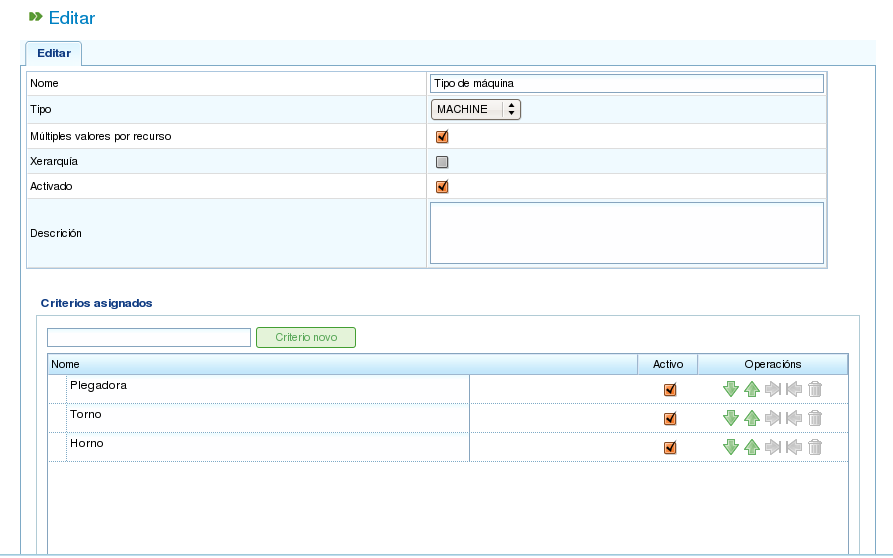

معیارها
Contents
معیارها عناصری هستند که در برنامه برای دستهبندی هم منابع و هم وظایف استفاده میشوند. وظایف به معیارهای خاصی نیاز دارند و منابع باید آن معیارها را برآورده کنند.
مثالی از نحوه استفاده از معیارها: به یک منبع معیار «جوشکار» اختصاص داده میشود (به این معنی که منبع دسته «جوشکار» را برآورده میکند)، و یک وظیفه برای تکمیل به معیار «جوشکار» نیاز دارد. در نتیجه، هنگامی که منابع با استفاده از تخصیص عمومی (در مقابل تخصیص خاص) به وظایف اختصاص داده میشوند، کارکنان دارای معیار «جوشکار» در نظر گرفته خواهند شد. برای اطلاعات بیشتر در مورد انواع مختلف تخصیص، به فصل تخصیص منابع مراجعه کنید.
برنامه چندین عملیات مربوط به معیارها را ممکن میسازد:
- مدیریت معیارها
- اختصاص معیارها به منابع
- اختصاص معیارها به وظایف
- فیلتر کردن موجودیتها بر اساس معیارها. وظایف و عناصر سفارش میتوانند بر اساس معیارها فیلتر شوند تا عملیات مختلف در برنامه انجام شود.
این بخش تنها عملکرد اول، یعنی مدیریت معیارها را توضیح میدهد. دو نوع تخصیص بعداً پوشش داده خواهند شد: تخصیص منابع در فصل «مدیریت منابع» و فیلتر در فصل «برنامهریزی وظایف».
مدیریت معیارها
مدیریت معیارها از طریق منوی مدیریت قابل دسترسی است:

برگههای منوی سطح اول
عملیات خاص برای مدیریت معیارها مدیریت معیارها است. این عملیات به شما امکان میدهد معیارهای موجود در سیستم را فهرست کنید.

فهرست معیارها
میتوانید با کلیک روی دکمه ایجاد به فرم ایجاد/ویرایش معیار دسترسی داشته باشید. برای ویرایش معیار موجود، روی نماد ویرایش کلیک کنید.

ویرایش معیارها
فرم ویرایش معیارها، همانطور که در تصویر قبلی نشان داده شده، به شما امکان میدهد عملیات زیر را انجام دهید:
- ویرایش نام معیار.
- مشخص کردن اینکه آیا میتوان چندین مقدار را همزمان یا فقط یک مقدار برای نوع معیار انتخابشده اختصاص داد. به عنوان مثال، یک منبع میتواند دو معیار «جوشکار» و «اپراتور تراش» را برآورده کند.
- مشخص کردن نوع معیار:
- عمومی: معیاری که میتواند هم برای ماشینها و هم برای کارکنان استفاده شود.
- کارمند: معیاری که فقط برای کارکنان قابل استفاده است.
- ماشین: معیاری که فقط برای ماشینها قابل استفاده است.
- نشان دادن اینکه آیا معیار سلسلهمراتبی است. گاهی اوقات، معیارها باید به صورت سلسلهمراتبی در نظر گرفته شوند. به عنوان مثال، اختصاص معیار به یک عنصر به طور خودکار به معنای اختصاص آن به عناصر مشتقشده از آن نیست. یک مثال روشن از معیار سلسلهمراتبی «موقعیت مکانی» است.
- نشان دادن اینکه آیا معیار مجاز است. به این ترتیب کاربران معیارها را غیرفعال میکنند.
- توصیف معیار.
- افزودن مقادیر جدید. یک فیلد ورود متن با دکمه معیار جدید در قسمت دوم فرم قرار دارد.
- ویرایش نام مقادیر معیار موجود.
- جابجایی مقادیر معیار به بالا یا پایین در فهرست مقادیر معیار فعلی.
- حذف مقدار معیار از فهرست.
فرم مدیریت معیارها از رفتار فرم توصیفشده در مقدمه پیروی میکند و سه عمل ارائه میدهد: ذخیره، ذخیره و بستن و بستن.